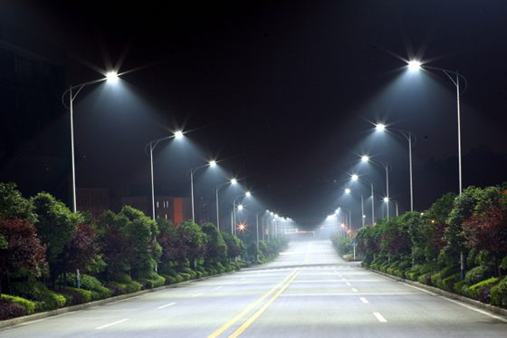
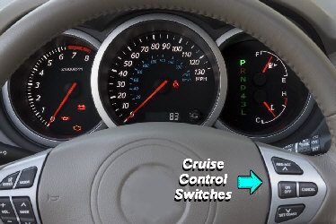
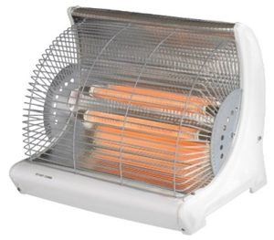
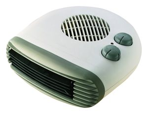
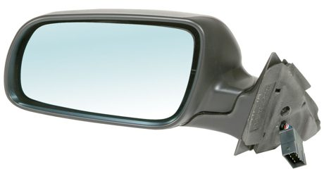
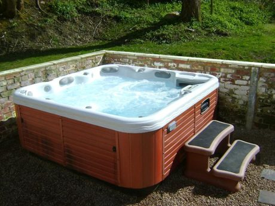

Section 1: Systems and Sub-Systems Diagrams
Most industrial products are designed using the systems approach. The engineer starts with the function the product must perform, then breaks that function down into a series of sub-systems, each of which can be designed, built and tested separately.
A systems diagram shows the whole system as a single block inside a dashed line called the system boundary. The real-world inputs and outputs are shown as arrows entering and leaving the boundary. A sub-systems diagram opens up that block to show the individual sub-systems and how they interact. The arrows show the flow of information, energy or materials between them.
The simplest form — a single process block with an input and an output — is sometimes called the universal system diagram. It shows what goes in and what comes out, but nothing about how the system works. Breaking that block into sub-systems is what makes the diagram useful to an engineer.
Complex systems
At National 5 most systems had a simple chain of sub-systems: input, control, driver, output. At Higher you will meet complex systems, where several sub-systems interact, some sub-systems feed into more than one other, materials as well as signals flow through the system, and there may be more than one feedback path.
An automatic washing machine is a good example. Its function is to process dirty clothes into clean clothes. The control unit runs the selected wash cycle, but it also relies on sensors in the drum to tell it when the water is hot enough and when the drum is full.
- Three different kinds of input enter the boundary: an instruction (the wash cycle), a material (cold water) and the thing being processed (dirty clothes).
- The control unit sends signals to three output sub-systems: the heater, the motor and the pump.
- Two feedback sensors measure conditions in the drum and send that information back to the control unit, so the machine is a closed-loop system.
- There are two outputs: the clean clothes and the waste water.
Section 2: Open-Loop Control
At its simplest, a control system processes an input condition to produce a specified output, with no check on whether the output is actually what is wanted. This is open-loop control.
Some textbooks and exam papers show an amplifier between the control unit and the output driver, because the control signal often needs to be made bigger before it can switch the driver. If you know the specific kind of amplifier (for example a comparator or a difference amplifier), name it rather than just writing “amplifier”.
A hand-held hairdryer is a good example. The heater and fan motor stay on for as long as the switches are held down. The temperature of the air is not measured or adjusted — the air is simply blown out at whatever temperature the heater produces.
An automatic street lamp is another. A light sensor switches the lamp on when it gets dark, but nothing measures the light the lamp itself produces.

A model of the street lamp is shown below. The LDR and variable resistor form a voltage divider, which converts the light level into a voltage (the control sub-system). The transistor is the output driver: when it gets dark, the LDR’s resistance rises, the voltage at the base rises and the transistor switches on the lamp.
Section 3: Closed-Loop Control
Closed-loop control systems measure their own output and adjust their performance to keep it at the desired level. Every closed-loop system includes a feedback sensor. The control sub-system processes the feedback signal and makes a ‘decision’ on whether the output should change.
The central heating in most homes is controlled by a thermostat. It senses the room temperature and switches the boiler off when the set temperature is reached, then on again when the room cools below it.
Cruise control on a car keeps the car at a constant speed, even on hills. The feedback sensor is a speed sensor (such as a tacho-generator, which gives a higher voltage the faster it turns) connected to a wheel. When the car starts to climb a hill it slows down; the speed sensor feeds this back to the control unit, which increases the engine power to bring the speed back up to the desired value.



Section 4: Two-State Control with a Comparator
Many control systems process analogue signals such as temperature, light level, speed or position. Analogue closed-loop control needs an analogue processing device — the operational amplifier (op-amp). You have met the op-amp configurations in Higher Analogue Electronics; here the focus is on how they are used in a control system.
The simplest arrangement uses the op-amp as a comparator. It compares two voltages: a reference (the desired value) and a feedback signal from a sensor (the actual value). Because it has no feedback resistor, its gain is huge and its output is always saturated — either fully positive or fully negative. This gives two-state control: the output device is either fully on or fully off.
Section 5: Control Diagrams and Error Detection
A systems diagram shows a general ‘control’ block. When an op-amp or microcontroller is used in a closed-loop system, engineers usually draw a control diagram instead. It breaks the control block into more specific parts and shows exactly where the desired value and the feedback signal are compared.
The error detector
The circle with a cross is the error detector (also called a summing point or comparison point). It shows that the control involves two signals: the desired value enters at the + input and the feedback signal at the − input. The difference between them is the error:
The feedback is connected to the negative input because the system acts to reduce the error. This is called negative feedback.
Always connect the + to the desired value and the − to the feedback, and leave the other two quarters of the circle blank. In the feedback box it is safest to write the general type of sensor (temperature sensor, speed sensor, light sensor): naming the wrong specific device, such as a speedometer instead of a speed sensor, loses the mark even if your meaning is clear.
The feedback line is taken from the output (after the output device) and returns to the error detector. In the mirror system below, a potentiometer turned by the mirror measures its actual position, and the comparator drives the motor until the mirror matches the position set on the dial.

Section 6: Negative Feedback and Lag
The purpose of closed-loop control is to keep the output as close as possible to the desired level. With negative feedback, the control system is always trying to pull the output back towards the desired value by reducing the error.
A graph of temperature against time for a two-state heating system looks like this:
The temperature never settles exactly at the desired value. This is because of lag — a delay in the system:
- When the desired temperature is reached the heater switches off, but the element is still hot, so it keeps heating the room for a while. The temperature overshoots.
- When the room cools to the desired temperature the heater switches on, but the element takes time to warm up, so the room keeps cooling. The temperature undershoots.
- The temperature therefore hunts continually above and below the desired value.
In a heating system this is acceptable — it even has an advantage, as the boiler is not switched on and off every few seconds. In many other applications the inaccuracy is not acceptable. A motor under two-state control would constantly be starting, stopping or reversing: this uses more power, increases wear on the moving parts, and gives jerky rather than smooth motion.
Positive feedback
The opposite of negative feedback is positive feedback, where the feedback reinforces the error instead of reducing it. A familiar example is a microphone held too close to a speaker. Sound from the speaker is picked up by the microphone, amplified, sent out through the speaker louder, picked up again, and so on in an endless loop. The result is the high-pitched howl you hear at concerts and school assemblies.
Positive feedback has some useful applications (for example in oscillator circuits and in the Schmitt trigger, which gives a clean switching action), but almost all control systems use negative feedback, because the aim is to keep the output steady at the desired value.
Section 7: Proportional Control
Proportional closed-loop control gives a more accurate response. It uses an op-amp configured as a difference amplifier, which amplifies the difference between the reference (desired value) and the feedback signal. Its output is proportional to the error: a large error gives a large output, a small error a small output, and no error gives no output.
So a heater under proportional control works hard when the room is cold, then gradually reduces its power as the room approaches the desired temperature, instead of switching fully on and fully off.
This is the difference amplifier formula from the data booklet (see Higher Analogue Electronics, Section 12). The reference goes to one input and the feedback to the other, and the output is the amplified error.
The effect of gain
- With low gain, the output is not very powerful, so the temperature rises slowly. As the error gets smaller the output reduces, and the rate of rise slows further. There is no overshoot.
- With high gain, the system responds quickly and the temperature initially overshoots the desired value. Lag causes some oscillation, but it gradually dies away until the temperature settles.
- In both cases the temperature settles fractionally below the desired value. Some error is needed to produce any output at all, so a small steady error always remains.
Investigate: two-state and proportional control
The explorer below models a room heated by a heater with a little lag. Try two-state control first, then proportional control with different gains. Tick keep previous trace to compare two settings.
| Two-state control | Proportional control | |
|---|---|---|
| Op-amp configuration | comparator | difference amplifier |
| Output | fully on or fully off | varies in proportion to the error |
| Response | hunts above and below the desired value | settles close to (just below) the desired value |
| Typical uses | heating, where small swings do not matter | motor speed and position, where smooth, accurate control is needed |
| Cost and complexity | simpler and cheaper | more complex; gain must be set carefully |
Section 8: Exam-Style Questions
These questions are in the style of the Higher question paper. Draw diagrams and graphs on paper, then check them against the model answers.
Question 1 — Art gallery lighting
An electronic system controls a spotlight in an art gallery. As the natural light level changes, the spotlight brightens or dims as required to keep the overall light level on the paintings constant. The light level can be adjusted.
Question 2 — Wind turbine head
An electronic control system keeps a wind turbine facing into the wind. The wind direction is sensed by a wind vane connected to a potentiometer. This signal is compared with a second potentiometer that senses the position of the turbine head, and the head is rotated by a motor until it faces the wind. As the head moves close to the wind direction, the motor slows and then comes to rest.
Question 3 — Hot tub

A hot tub uses a two-state closed-loop control system to heat the water to a desired temperature.
Question 4 — Bottling-plant conveyor
A conveyor in a bottling plant must move at a steady speed so that bottles are filled accurately. The engineers are choosing between two-state and proportional control for the conveyor motor.
Section 9: Systems Analysis Project
The course specification asks you to research a complex engineering system and describe it using the systems approach. Choose one of the Scottish systems below (or one agreed with your teacher), research it, and complete the tasks. This is excellent preparation for the extended questions in the exam, which often describe an unfamiliar system and ask you to analyse it.
| System | Starting points for your research |
|---|---|
| Cruachan Power Station, Argyll | A pumped-storage hydro scheme inside a mountain. How does it switch between generating and pumping? How is its output matched to demand? |
| The Falkirk Wheel | A rotating boat lift linking two canals. How is the rotation controlled and kept balanced? What safety systems are needed? |
| Edinburgh Trams | How are tram speed, braking and doors controlled? How do the trams interact with traffic signals? |